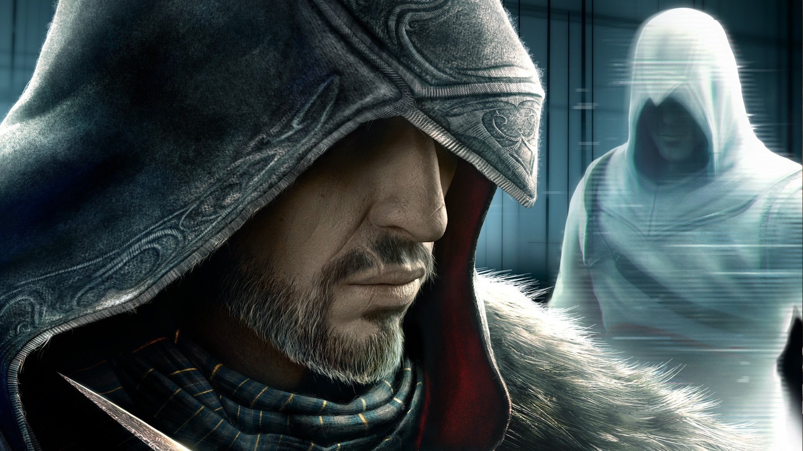
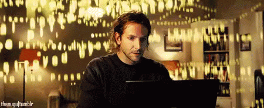

Ova stranica je inkubator ideja, svjedočenje i inspiracija. Kada dobijem neku ideju, probati ću je razraditi i opisati tu da je mogu predstaviti svijetu. Sve što je prikazano na ovoj stranici je mojih ruku djelo. Od pisanja HTML, CSS koda pa sve do fotografija koje su prikazane na ovoj stranici. Neka opća ideja je prikazati ljudima svijet iz moje perspektive. Bit će opisana neka moja iskustva. Ovo će biti za ljude otvorena uma, jer će se mnoge stvari navedene tu kositi s uobičajenim vjerovanjima.
- Web dizajn
- Pisanje
- Razmišljanje
- Fotografija
- Kreativnost
Tražio sam neko mjesto kamo mogu ispucati svoja mišljenja i ideje i onda sam stvorio ovo. Savršeno je. Tako jednostavno, a opet tako složeno. Ovo sam stvorio prvenstveno zbog sebe. Ja uživam stvarajući ovo. Tako uvijek mogu biti siguran da će biti bar jedan stalan čitatelj.
“Nothing is true, everything is permitted.„ ― Ezio Auditore Da Firenze
Kao što moj omiljeni lik iz video igrice kaže, ništa nije istinito, sve je dozvoljeno. Tako i ja mijenjam svoja mišljenja i uvijek pokušavam biti otvorena uma za sve nove stvari koje dolaze.
Ova stranica će biti nešto što mogu graditi, nešto što zapravo nema ograničenja. Nešto za što mogu živjeti, graditi nešto što je veće od mene samoga. Mogu se baviti mnogim pitanjima koje me zanimaju i time mogu graditi svoje znanje i iskustvo i ostati motiviran u mnogim područjima:
- Zdravljem
- Financijama
- Filozofijom
- Umjetnošću
- Glazbom
Dokumentirati ću svoja iskustva i avanture iz svakodnevnog života. Sjećam se svojega razmišljanja kada sam počeo svirati gitaru. Zašto bi uopće naučio svirati kada uvijek jednostavno mogu pustiti glazbu na zvučniku? Sada kad stvarno sviram vidim koliko je to smiješno. Neusporedivo je. Sasvim drugi sport.
Nemoj shvaćati ove stvari pre ozbiljno. Sve što pišem samo su moja razmišljanja i moj pogled na stvari. Moj način igre. I molim te nemoj suditi. :)
Konačan cilj je pomaknuti granice. Zatim još malo. I malo pomalo postati bez granica.
Krenimo.